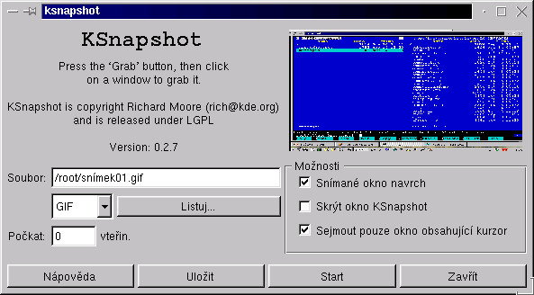

KSnapshot je jednoduchý nástroj na snímání obrazovek. Je schopen snímat jednotlivé obrázky, celou pracovní plochu nebo jednotlivá okna. Obrázky pak mohou být ukládány v nìkolika rùzných formátech.

Program lze spustit z hlavního menu ve skupinì 'Grafika' nebo z pøíkazové
øádky pøíkazem
Program ihned po spustìní sejme pracovní plochu obrazovky. Pokud chcete právì ji, staèí jednodu¹e stisknout tlaèítko ulo¾it.
Snímání obrazovek je velmi jednoduché, pouze stisknìte tlaèítko 'Start' a program sejme aktualní obrazovku. V pravém rohu je k dispozici malý náhled sejmuté obrazovky. Chcete-li jej vidìt ve skuteèné velikosti staèí na nìj jednou kliknout levým tlaèítkem my¹i.
Obrázek ulo¾íte zadáním jména souboru a stisknutím tlaèítka 'Ulo¾it'. Nechcete-li vypisovat dlouhá jména adresáøù mù¾ete nalistovat spravný adresáø pøes tlaèítko 'Listuj'. Ze seznamu formátu pod jménem souboru mù¾ete vybrat ten který vám nejvíce vyhovuje.
Ve skupinì 'Mo¾nosti' mù¾ete pomocí nìkolika voleb nastavit zpùsob snímání obrazovek:
Chcete-li vedìt co je nového v této verzi pøeètìte si release notes (v angliètinì).
Vlastníkem autorských práv k programu je Richard J. Moore 1997-1998 (rich@kde.org)
KSnapshot je uvolnìn pod licencí LGPL. Proto¾e jde o volnì ¹iøitelný program
neposkytuje se ¾ádná záruka.